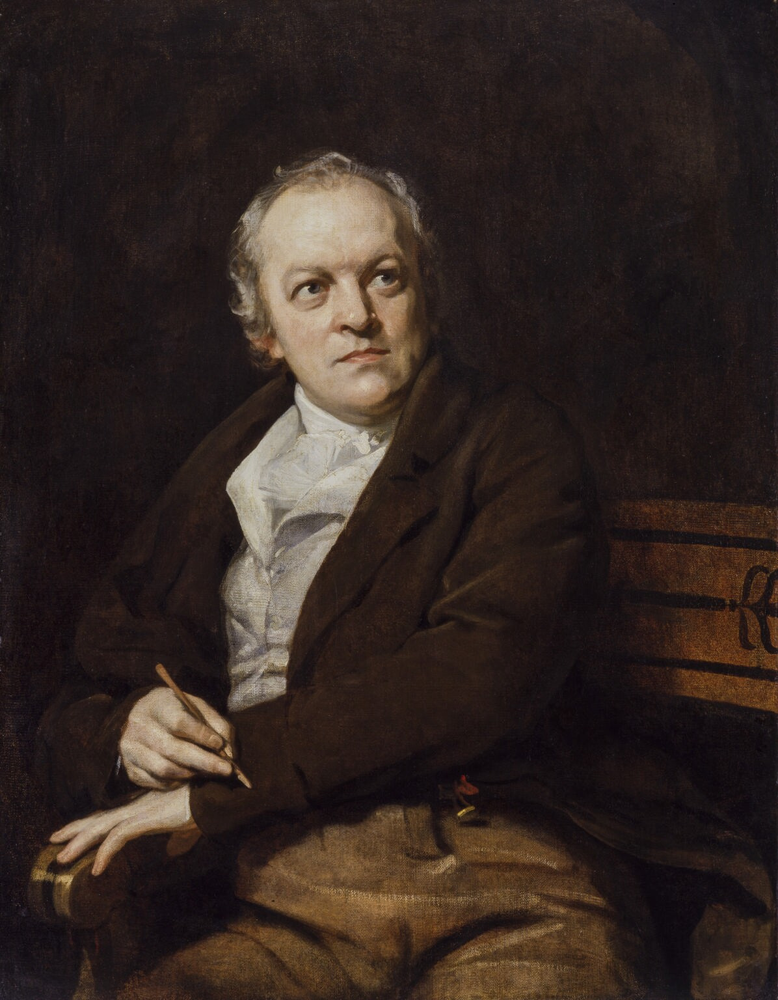
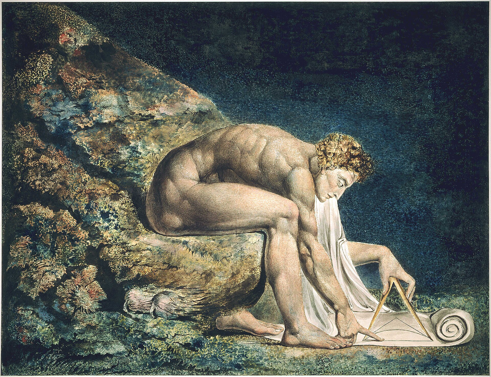
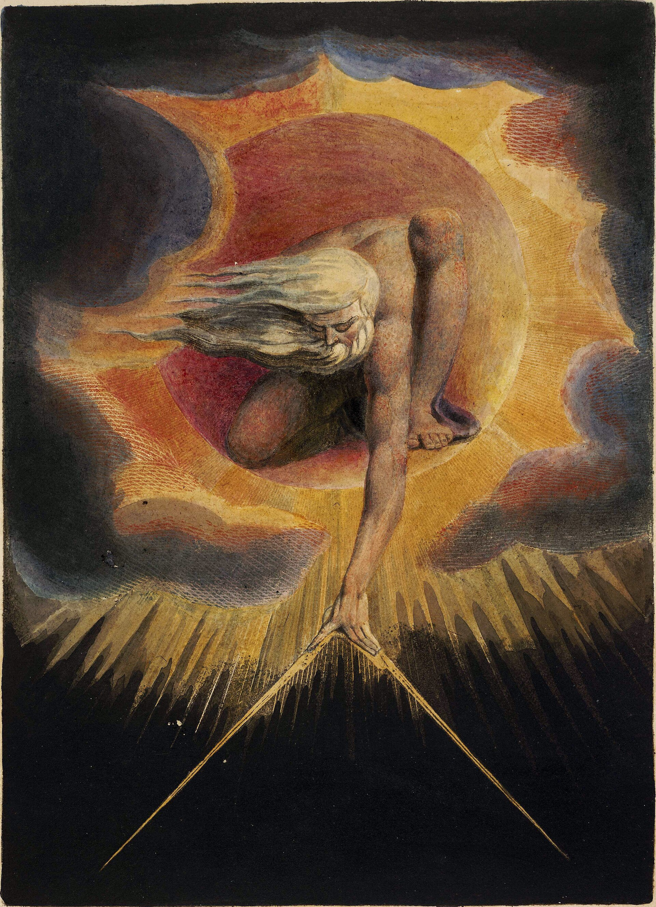
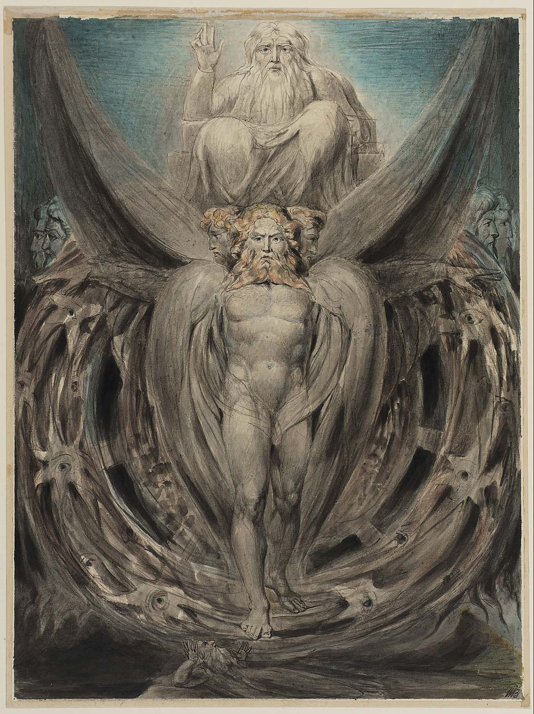
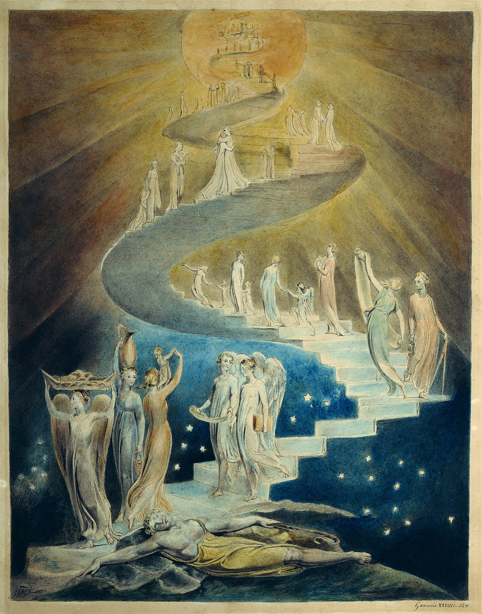
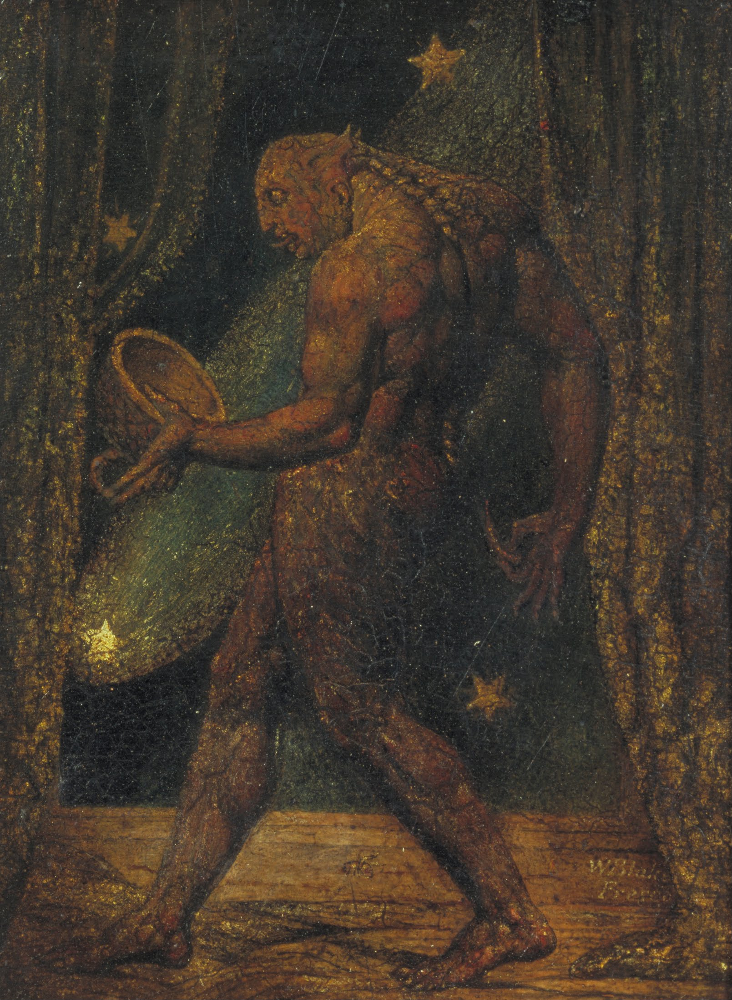

Blake's visions are a real thread in the visionary and psychological side of UFO writing. Patrick Harpur builds his daimonic reading of the phenomenon on Blake's "double vision," and Jeffrey Kripal and Terence McKenna also draw on him. Names link to the UFO Researcher Network map. See also the UAP Desk.
Last updated Nov 15, 2026 (Jerusalem time).
1. The short answer
Blake is a recurring reference in the psychological, daimonic, and imaginal strand of UFO thinking, the strand that asks what these experiences are and how they work on the mind. Patrick Harpur makes the most substantial use of him. Jeffrey Kripal and Terence McKenna also bring him into work that theorizes UFOs or flying saucers. Claims below were checked against pages and documents that were opened, not from memory. Inferences are labeled as such.

William Blake, oil on canvas, 1807, by Thomas Phillips. National Portrait Gallery, London (NPG 212). Image from Wikimedia Commons; collection record at the National Portrait Gallery.
2. Blake's visions, in plain words
William Blake was an English poet, artist, and engraver working in the late 1700s and early 1800s. He reported seeing spiritual beings throughout his life. Mark Vernon, writing in Aeon and drawing on Peter Ackroyd's 1995 biography, records the well-known childhood episode on Peckham Rye, in which an early biographer says Blake saw a tree filled with angels; another occasion on which he said he had seen the prophet Ezekiel; and his wife Catherine's report that he first saw God at the age of four.
Jeffrey Kripal, who has written at length about Blake, adds that Blake had literal visions, composed illustrated manuscripts out of those states, and described his dead brother appearing to him in extraordinary ways. In his own lifetime he was often treated as a crank. Later readers took the visions seriously as a way of seeing, not as a private illness.
The idea that most often travels into UFO writing is what Blake called double vision: the ability to see an ordinary object and, at the same time, a deeper, personified reality in it. Single vision, in his terms, sees only the measurable thing. In a letter to his patron Thomas Butts, quoted by Vernon, Blake warned against "Single vision and Newton's sleep," meaning a mind trapped in measurement alone.

Newton, William Blake, 1795–c. 1805. Colour print finished with ink and watercolor. Tate, London (N05058). Image from Wikimedia Commons; collection record at Tate.
Do you not see a round disk of fire somewhat like a Guinea? O no, no, I see an Innumerable Company of the Heavenly Host crying Holy, Holy, Holy is the Lord God Almighty.
— William Blake, as quoted by Patrick Harpur in Seeing Things, Magonia 42, March 1992
Harpur stresses that Blake said he could see the sun as a gold coin, like everyone else, and also as a heavenly host. The point is not that the coin-sun is false. It is that literal seeing is only one mode. In this tradition, a daimon (from the Greek, an in-between being, not simply a moral "demon") is real, but not literally a machine or a zoological specimen.

The Ancient of Days, frontispiece to Europe a Prophecy, copy D, William Blake, 1794. Colour relief etching with hand colouring. British Museum, London (1859,0625.72). Image from Wikimedia Commons; collection record at the British Museum.
3. Who invokes Blake, and how
Direct means Blake is used to interpret UFOs, abductions, or "impossible" encounter claims. Passing means a brief mention, a show-notes pairing, or two topics placed side by side.
Who
Work
Year
How Blake is used
Kind
Patrick Harpur
Seeing Things, Magonia 42
1992
Uses Blake's double vision to reread UFO "misidentifications" as visionary encounters
Direct
Patrick Harpur
Daimonic Reality
1994
Applies Blake, Yeats, and Jung to UFOs, fairies, lights, and abductions
Direct
Patrick Harpur
Dreamflesh interview
2008
Says daimonic reality "obeys Blake's double vision"; discusses UFO abductions in the same interview
Direct
Patrick Harpur
Seeing things, Essentia Foundation
2021
Repeats the heavenly-host argument; mentions visitations from "an angel or UFO"
Direct
Terence McKenna
New Maps of Hyperspace, Magical Blend
1989
Cites Blake on imagination and a "golden track" in an essay on flying saucers as the soul made visible
Direct
Jeffrey Kripal
Reason, Democracy, and Mind
2025
Treats Blake as the model "impossible" visionary in a defense of his book on souls and UFOs
Direct
Patrick Harpur
Imaginary Reality, Magonia 32
1988
Names "Bill Blake" among Romantic poets who described the imagination behind UFO visions
Passing
The Sacred Speaks
Episode 127, Jeffrey Kripal
2025
Published notes place UFOs and Blake in the same conversation; the audio was not transcribed here
Passing
David Halperin
The Box of Crazy, UFOs, and Ezekiel's Vision
2013
Treats Blake as the classic illustrator of Ezekiel's merkabah, which some moderns read as a UFO
Passing
Christopher Knowles
Stairway to Sirius, The Secret Sun
2009
Notes Blake drew Jacob's Ladder as a spiral, in a post on Sirius and ancient-astronaut imagery
Passing
Mark Vernon
Carl Jung's Penultimate Concerns
2026
Discusses Jung on UFOs and Blake on Job in one essay, not as a single Blake-UFO argument
Passing
Harpur is the central case. In Seeing Things (Magonia 42, March 1992), he argues that ufology is too quick to dismiss sightings of planets or the moon as mere errors. He quotes Blake's guinea-sun and heavenly host, and Blake's distinction between seeing with the eye and seeing through it. His closing turn is practical: if Blake had taken a radio call from "Val of Peckham," who reported a watchful light that was later identified as a planet, he would not have told her she was wrong. He would have said she had glimpsed Venus as a living presence. Harpur's punch line is that, to the poetic imagination, "everything in the sky is a UFO whose final reality can never be known." The essay is at magoniamagazine.blogspot.com/2013/11/seeing-things_24.html.
If Blake had been running the phone-in when Val of Peckham rang, he would not have told her that she had misidentified a planet; he would have said she was privileged to have glimpsed the awesome form of foam-born Venus rising in splendour from the sea of night.
— Patrick Harpur, Seeing Things, Magonia 42, March 1992
That argument feeds Daimonic Reality: A Field Guide to the Otherworld (1994), which treats UFOs, fairy encounters, phantom animals, and similar events as manifestations of an in-between reality. The Google Books description of the book, which was opened, says Harpur connects those events using ideas from Jung, W. B. Yeats, and Blake. In a November 2008 interview with Gyrus for Dreamflesh, Harpur said this daimonic way of seeing "obeys Blake's double vision," and in the same interview discussed UFO abductions as resembling shamanic initiation. The interview is at dreamflesh.com/interview/animated-world-patrick-harpur/.
Harpur returned to the heavenly-host passage in Seeing things: The daimonic nature of reality, published by the Essentia Foundation on January 8, 2021. There he says we need double vision "to see the daimons, to see that they are real, but not literally so." In that same essay he mentions "every visitation from an angel or UFO" while discussing how modern technology turns sacred light into ordinary electricity. The essay is at essentiafoundation.org/seeing-things-the-daimonic-nature-of-reality/reading/.
Terence McKenna's New Maps of Hyperspace, published in Magical Blend in 1989, is a different kind of use. The essay argues that the flying saucer is "the soul, exteriorized in three-dimensional space," and discusses UFO experiences as moments when dream-like or hyperspatial laws briefly operate in ordinary space. In that same text McKenna cites "the English poet-mystic, William Blake" on the danger of falling from "the golden track," and later writes, "The imagination is everything. This was Blake's perception." He does not claim that Blake saw a craft. The Blake lines are about death, imagination, and spiritual passage, placed inside a flying-saucer essay. The PDF that was opened is at vasulka.org/archive/Artists3/McKenna,Terence/NewMapsOfHyperspace.pdf.
Jeffrey Kripal's case is also direct, but at one remove from case-by-case ufology. How to Think Impossibly (University of Chicago Press, 2024) is explicitly about souls, UFOs, time, and belief. In a September 23, 2025 reply to reviews of that book, Kripal writes at length about Blake, calls him "maybe the example" of the superhumanities (humanities centered on altered states, visions, apparitions, and automatic writing), and notes that reviewer Bernard Wills compared Blake and Coleridge to modern UFO visionaries. Kripal agrees that Romantic vision "is all about the impossible." He also says he has written books visually inspired by Blake, and that we should "study Blake and the Romantics" alongside scientific reason. That reply is at social-epistemology.com/2025/09/23/reason-democracy-and-mind-a-popular-response-jeffrey-kripal/.
The remaining rows are thinner. David Halperin, on November 21, 2013, opens a post about UFOs and Ezekiel by addressing Blake as the classic illustrator of the merkabah, "UFO to some moderns," and compares a 20th-century outsider artist to Blake.

The Whirlwind: Ezekiel's Vision of the Cherubim and Eyed Wheels (illustration to Ezekiel 1:4–28), William Blake, about 1803–05. Pen and watercolor over graphite. Museum of Fine Arts, Boston (90.108). Image from Wikimedia Commons; collection record at the Museum of Fine Arts, Boston.
Christopher Knowles, in a December 14, 2009 Secret Sun post, notes that Blake depicted Jacob's Ladder as a spiral staircase, then turns to Sirius and ancient-astronaut symbolism in I Am Legend.

Jacob's Ladder, also called Jacob's Dream, William Blake, c. 1799–1806. Pen and ink and watercolor. British Museum, London (1949,1112.2). Image from Wikimedia Commons; collection record at the British Museum.
Mark Vernon's May 23, 2026 essay on Jung discusses UFOs as a sign of spiritual hunger and, separately, Blake's reading of the Book of Job; that is juxtaposition, not a claim that Blake belongs to ufology.
4. What this search did not find
Several likely names were checked and did not yield a confirmed, opened source in which the author discusses Blake's visions as part of a UFO or UAP argument.
No confirmed Blake discussion was found in Jacques Vallee, Diana Walsh Pasulka, Whitley Strieber, or John Keel, or in Carl Jung's Flying Saucers.
Eric Wargo mentions Blake on The Nightshirt in other contexts, including a Ginsberg post and a quoted line from Alan Moore about Blake's eternal fourfold city. That is not the same as Wargo analyzing Blake's visions as UFO encounters.
Blake's painting The Ghost of a Flea, and his figure Urizen, did not turn up in the UFO sources that were opened.
The phrase doors of perception comes from Blake's The Marriage of Heaven and Hell, but the famous book title is Aldous Huxley's. In psychedelic talk it is often Huxley's phrase, not a discussion of Blake in the UAP world.

The Ghost of a Flea, William Blake, c. 1819–20. Tempera and gold on mahogany. Tate, London (N05889). This painting did not turn up in the UFO sources opened for this page; it is included as an example of Blake's visionary art, not as a UFO-source illustration. Image from Wikimedia Commons; collection record at Tate.
Absence from this search is not proof that those writers never mentioned Blake anywhere. It means no such instance was confirmed in the sources opened for this page.
5. A technology note, not a control-system theory
No opened source ties Blake to Jacques Vallee's control-system idea. The only sourced technology angle sits in Harpur's 2021 Essentia essay, the same piece that uses Blake's double vision and mentions an angel or UFO visitation. There Harpur argues that television, computers, cyberspace, and virtual reality literalize Imagination and the Otherworld: we watch "little people" on a screen, and we mistake a web of information for a world-soul. That is Harpur's warning about literalized images, not a theory of AI as a non-human intelligence, and not a Blake-and-UFO thesis about machine control. It is noted here only because it appears in a text that already joins Blake and UFOs.
6. Episodes and talks
These are episodes whose pages were opened, and whose published notes place Blake in a UFO or high-strangeness conversation. No YouTube lecture was added unless Blake's presence in that recording could be confirmed from a page that was opened.
Episode 96: Patrick Harpur on Daimonic Reality — Some Other Sphere, March 29, 2023. The episode notes say the 1994 book applied Blake, Yeats, and Jung to paranormal phenomena, including the realm between body and spirit.
127: Jeffrey Kripal, How To Think Impossibly — The Sacred Speaks, September 9, 2025. The published notes frame the conversation as running from UFOs and near-death experiences to William Blake. The audio itself was not transcribed for this page.
7. Sources
Each link below was opened while preparing this page. Wikipedia was not used as a source.
Seeing Things — Patrick Harpur, Magonia 42, March 1992.
Image dates, titles, and collections were checked against the museum records and Wikimedia Commons file pages linked in the captions, not from memory. The images themselves are public-domain files from Wikimedia Commons and are stored with this page.